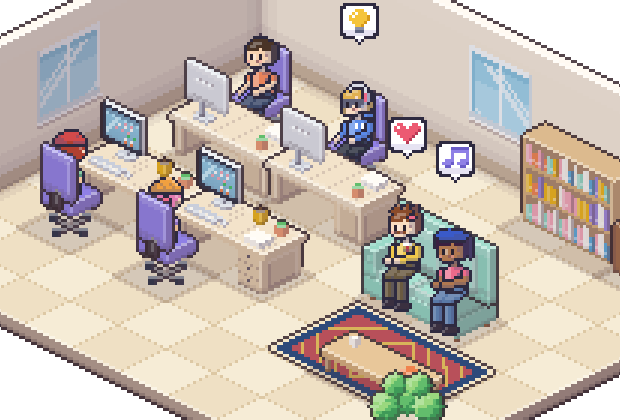

2026-11-25 · 이디자 · 색은 앱 라벤더 테마(라이트·다크) 값 그대로 · 사무실 그림은 기존 사무실 캡처 위에 덧그린 모형입니다(실제 앱 화면 아님) · 제품 코드 수정 없음
위쪽 책상에서 일하는 직원이 도우미 3명을 쓰는 중이라고 가정. 실제 크기의 약 1.6배로 확대해 보여 줍니다(아래 '실제 크기'도 확인).

A 추천머리 위 말풍선 배지 — 기존 감정 말풍선과 같은 틀. 숫자가 바로 읽힘. 말풍선이 겹치면 감정 말풍선보다 이 배지를 우선(제안).
B분신이 옆에 앉음 — 가장 직관적이고 재미있음. 다만 책상·옆 직원과 겹치고, 4명 이상이면 그릴 자리가 없음. 기존 '분신(포크)'과 헷갈림.
C작은 도우미 로봇이 머리 주위를 맴돔 — 귀엽고 개수를 그대로 보여 줌. 5개 넘으면 복잡, 실제 크기에서 6px라 잘 안 보임.
D바닥 빛 고리 — 고리 조각 수 = 도우미 수. 차분해서 업무 모드에 어울림. 의자·책상에 가려 잘 안 보이고 뜻을 바로 알기 어려움.
실제 크기(휴대폰 사무실 미리보기 크기) 비교: A·B는 읽힘, C·D는 확대해야 보임.
| 표기 | 모양 | 한눈에 뜻 | 좁은 폭(320~360) | 4개 언어 | 메모 |
|---|---|---|---|---|---|
| ×3 추천 | ×3 | 좋음 | 가장 짧음 | 번역 불필요 | 사무실 말풍선·아주 좁은 칸용 |
| 도우미 3 추천 | 도우미 3 | 가장 좋음 | 보통 | Helpers 3 / ヘルパー 3 / 助手 3 | 카드·목록·머리말용 |
| 3/5 진행 | 3/5 진행 | 헷갈림(완료 3? 동시 3?) | 보통 | 번역 필요 | 전체 수를 미리 모를 수 있음(추정) |
| 점 ●●● | 세어야 앎 | 짧음 | 번역 불필요 | 5개 넘으면 못 셈 · 색약 사용자에게 불리 | |
| 얼굴 겹침 | "여럿"은 알지만 숫자는 모름 | 짧음 | 번역 불필요 | 도우미 그림을 따로 그려야 함 |
권장 규칙: 넓은 곳은 "도우미 3", 좁은 곳·사무실은 "×3". 1명일 때도 "×1"이 아니라 표시 생략(혼자 일하는 것과 차이가 없어 보임) — 제안. 끝난 도우미 수는 머리말 펼침에서만 보여 줌.
왼쪽 라이트, 오른쪽 다크. 목록 줄은 휴대폰 폭 360 기준.
카드: 상태 글자("작업 중") 바로 옆. 목록 줄: 맨 오른쪽 고정, 제목이 대신 줄어듦(…). 도우미를 안 쓰는 줄에는 칩을 넣지 않음("—"는 자리 확인용 표시).
상태 줄에 한 줄 추가 → 누르면 각 도우미가 무엇을 하는지 펼쳐 봄. 위: PC 폭(라이트·다크), 아래: 휴대폰 360(4개 언어).
접힌 상태(기본). 한 줄만 늘어남.
휴대폰 머리말 규칙(제안)
· 360 폭에서 4개 언어 모두 한 줄 안에 들어감(이 시안에서 확인).
· 320 폭에서 넘치면 "도우미 3명과 함께" → "×3" 칩으로 줄임.
· 펼침 버튼은 손가락 크기 44px 이상.
· 펼친 목록의 각 줄 설명은 도우미가 받은 일 제목을 그대로 씀(번역하지 않음 — 사용자 데이터).
· 도우미가 모두 끝나면 줄이 사라지고, 머리말 펼침에 "도우미 3명이 끝냄"만 잠깐 남김.
직원 설정(장비/설정 탭)의 한 줄. 휴대폰 폭 360, 4개 언어. 경고는 '대기' 색(노랑/갈색)으로, 빨강은 쓰지 않음(오류처럼 보임).
스위치는 손가락 크기를 위해 줄 전체를 눌러도 켜지게 하는 것을 제안. 켜는 순간 확인 창은 두지 않음(경고 줄이 늘 보이므로) — 대표가 원하면 첫 1회 확인 창 추가 가능. 휴대폰에서 켤 수 있게 할지는 정해지지 않음.
· 도우미 수 = "지금 동시에 일하는 도우미 수"(끝난 것 제외) — 이 숫자를 앱이 실제로 알 수 있는지는 확인 못 함(정리드 확인 필요).
· 칩 색: 테마 --primary 14% 배경 + 35% 테두리, 글자 --primary. 사무실 말풍선: 흰 바탕 + 2px 진한 테두리(기존 감정 말풍선 규격 따름).
· 문구 키 예: 도우미 N / ×N / 도우미 N명과 함께 / 설정 제목·설명·경고 — 4개 언어 위 시안 문구 그대로.
· 표시하지 않는 경우: 도우미 0~1명, 설정이 꺼진 직원, 업무 모드에서는 사무실 그림 표시만 숨김(카드·머리말은 유지) — 제안.